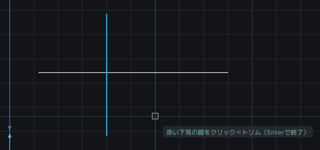
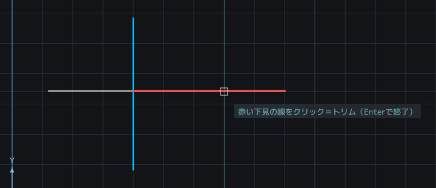
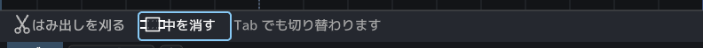
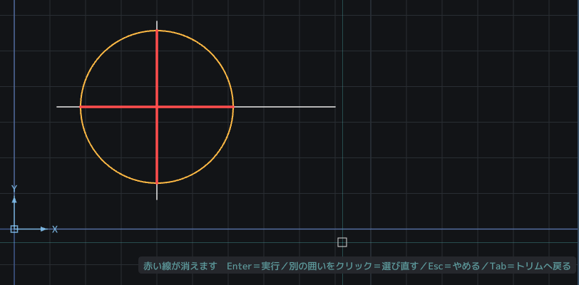

10. Editing: step by step
TR / TRIM
- ①Type TR → Enter.
- ②Click the cutting edge (the boundary you will trim back to). Press Enter with nothing selected = every object becomes a cutting edge.

② - ③Bring the cursor near the line you want to trim and a red preview appears. Click = that part is trimmed away. Enter = finish.

③
- Select objects first and then press TR = “trim them all”. Whatever sticks out beyond the lines you selected is trimmed off together, with one Enter. (We call this laying siege = driving out whatever has strayed outside.)
- Things that can be a cutting edge: lines, circles, arcs, polylines, ellipses and splines. Even curves cut exactly (dimensions and text cannot be cutting edges).
- Things that can be trimmed: lines, circles, arcs, ellipses, polylines and splines. Trim an ellipse and you get an elliptical arc; trim a closed polyline and you get one open polyline.
- ポリラインが自分と交わった所も切れ目になります。（交わりを探す時だけ辺を一本ずつの線として見て、切った後は一本のまま。角の継ぎ目では切れません）。基準線を選ぶ前でも、指を置けば赤く出ます。行き過ぎた尻尾と頭を落として両端が出会うと、閉じたポリラインになります。
- Splines can be cut too. Cutting does not move the shape by a hair (the skeleton of the curve is rebuilt so that it follows exactly the same path). The piece you cut off does, however, let go of its record of fit points = after cutting, that piece no longer snaps to them (the two ends can still be caught, as before). A closed spline cannot be cut yet (you will be told why).
TR → Tab: erasing everything inside an enclosure, in one move
This is exactly the reverse of trimming everything.
Where trim-them-all drives out what sticks out beyond the enclosure, this erases what lies inside it.
They are two faces of the same job, so the tool lives inside trim.
The surest way
- ①Click the line of the enclosure (a circle, a rectangle) to select it. For an enclosure made of several lines, such as a rectangle, double-click a line and the whole connected run is selected.
- ②Press トリム (Trim) on the ribbon (typing TR → Enter is the same).
- ③Press Tab and it switches to “erase inside”. Press Tab again to go back to trimming.

③ - ④What will vanish turns red, and the enclosure is outlined in amber. Enter = do it. Esc = give up.

④
※ Tab appears only when you entered with a closed enclosure selected. If it does not appear, the enclosure is broken somewhere.
Another way in: click inside
Type 中を消す (erase inside) → Enter (it is on the flick shelf too).
Called with nothing selected, it looks for the enclosure from a single click inside.
※ただし、線が囲いを横切っていると、その区切りごとの小さな部屋になります（横切った線が仕切りになるため）。中の線をまとめて消したい時は、上の【いちばん確実な手順】へ。
- Lines that straddle the enclosure are cut at the enclosure, and only the part inside vanishes (there is no need to trim them first).
- Circles, rectangles, rounded shapes, shapes built up from several lines — any of them can be the enclosure.
- Closed splines and ellipses can be enclosures too (inside a curve, in one go).
- The contents of a shape floating inside it (an island) are not erased.
- Text and dimensions cannot be cut, so they vanish only when they lie wholly inside. Those that straddle are left, and the history tells you how many.
- One press of U brings the whole lot back.
DIV / DIVIDE (division points)
- ①Type DIV → Enter. Click the object to divide.
- ③Type the number of divisions into the Command Line (4, say) → Enter. Points appear at equal intervals.
- Lines, circles, arcs and polylines can be divided. A polyline is divided by equal arc length along its whole run (not by the number of edges). A closed shape gets exactly count points; an open one gets count-1, with none at the two ends.
EX / EXTEND
- ①Type EX → Enter.
- ②Click the boundary (Enter with nothing selected = every object).
- ③Click the end of the line you want extended, on the side it should grow (a green preview appears). Enter = finish.
O / OFFSET
- ①Type O 150 → Enter (= a parallel line 150 away).
- ②When the line appears on the side you want it, click. You can go on producing them. A number → Enter changes the spacing. Right-click = finish.
Circles and arcs become concentric.
- ポリライン（四角も）は、丸ごと平行に太ります／細ります。角の始末は自動です＝壁の下書きが一手でできます。角が丸い四角も、Rが育って（縮んで）ついてきます。※内側へ入りきらない間隔は、理由を言って断ります。※円弧が角をなしている形だけは、まだ複線できません。
F / FILLET / CHA (chamfer)
タブ「直す」の［フィレット］［面取り］からも始められます。
- ①F 15 → Enter (radius 15) / CHA 10 → Enter (cut back 10).
- ②Click the first line.
- ③Click the second line, on the side you want to keep.
- ポリライン（四角も）の角も、同じ手で丸められます。②③で、同じポリラインの隣り合う二つの辺をクリック。※図形は一本のまま増えません（弧はポリラインの中に入ります）。半径0（角つなぎ）は線どうし専用です——ポリラインの角はもう繋がっているので、R か 面取りの寸法を先に決めてください。隣が円弧の角は、まだ作れません（画面が理由を言います）。
CO / COPY / M / MOVE
- ①Select the objects → type CO (copy) or M (move) → Enter.
- ②Click the base point (where you take hold; use a point that snaps, such as the corner of a column).
- ③Click the destination (numbers such as @1000,0 work too).
Copy goes on placing. Right-click = finish. You can paste into another tab as well.
S / STRETCH
“Move this wall 200 further back” — a tool that stretches only the ends you enclosed.
- ①Type S → Enter (ストレッチ (Stretch) on the ribbon does the same).
- ②Enclose the end you want stretched with a crossing window. Click one corner → click the opposite one (press, drag and release also works).
- ③Click the base point (use a point that snaps, such as the centre line of a column).
- ④Click where it should reach. A number such as 200 → Enter works, and so does a coordinate such as @200,0. Ortho on = exactly horizontal or vertical (in practice this is nearly always what you want).
- Objects that fell entirely inside the window move whole (= the same as a move).
- A line only half caught by the window has just the enclosed end moved = the line stretches or shortens. This is the heart of the tool.
- Dimensions stretch along with it, and their numbers change by themselves (4550 becomes 4750). The knack is to enclose the wall and its dimension together.
- Circles, arcs, ellipses, text and blocks move whole without changing shape (as long as their centre or insertion point is inside the window).
- Hatching moves only when it was enclosed whole. We do not make a fill whose shape has been distorted — correcting the shape and hatching it again is the surer way.
- Esc and right-click each go back one step (the drawing is untouched).
The commonest stumble: the line “bends”
A line only half caught has just the enclosed end moved. So if you put that end down at an angle, the line goes to an angle (an upright wall leans).
You have not done anything wrong; that is what the tool is — the same thing happens in other CAD programs.
- Turn on F8 (ortho) and it moves horizontally and vertically only. For the everyday “move the wall back 200”, this is nearly always right.
- The screen warns you before you place it: while you are looking for where to reach, any line whose angle would change is previewed in amber, and the prompt beside the cursor says “placing it here will change the angle of the amber line”. When amber appears, press F8 or take the window again.
- When you want to stretch a single line while keeping its angle, this is not the tool: use a grip (select the line and take hold of the blue square at its end), or EX (extend).
RO / ROTATE
- ①Select → RO → Enter. Click the base point of the rotation.
- ③Turn it and click. A number + Enter gives the angle. Touch a line and you can borrow that line's direction.
SC / SCALE
- ①Select the objects → SC → Enter (拡大縮小 (Scale) on the ribbon does the same).
- ②基点をクリック。※この点だけが動きません。どこを押さえるかで、伸びる向きが変わります（部材の左下を押さえれば、右上へ育ちます）。
- ③Drag to set the factor and click, or type a number + Enter (2, or 0.5). The faint ring marks “×1.00”. Outside the ring is bigger, inside it is smaller. The factor is shown beside the cursor. Expressions work too (3640/2 does not mean a factor of 1820 — it means 1820).
※ Text heights, dimension arrows, hatch patterns and block scales all grow and shrink with it (everything that lives on the drawing goes together).
※ When you want to change the measure of the whole drawing, use CAL (unit scaling). That one stretches the dimension styles and the dash spacing as well.
※ To flip something over, use MI. SC takes positive factors only.
MI / MIRROR
- ①Select the objects → MI → Enter (鏡像 (Mirror) on the ribbon does the same).
- ②Click the first point of the mirror axis (use a point that snaps, such as the centre line of a column).
- ③Click the second point = the mirror image is born on the other side of the axis. Ortho on = the axis exactly horizontal or vertical (which is what a symmetrical plan wants).
The original stays. If you want it gone, note that the original is still selected right after placing, so simply press E (erase) = a mirror that moves.
Text stays the right way round in the mirror = the notes on your drawing do not come out backwards (the same convention as standard practice in CAD).
AR (array) / PAR (polar array)
- AR 3,4 → Enter = 3 rows, 4 columns. Base point → click where you want the next one to sit, and that offset becomes the spacing in both directions. To lay them out to the left or downward, simply point below and to the left of the base point.
- PAR 8 → Enter = 8 around a circle. Click the centre. PAR 8 180 = 8 in a 180° fan. PAR 8 360 N = distributed without rotating them.
Take-off (ひろい / HIROI / BOM)
Counts the block references placed on the drawing, by name.
Frame 1800×48, brace ×90 — the “take-off” of the site.
The table is read out into the log, and the names and counts go to the clipboard.
⌘V into a spreadsheet lays them out in two columns = ready to be the basis of an order or a loading list.
拾い 表 (take-off table) / 拾い CSV
拾い 表 = builds the summary table (name | count | total) on the drawing.
The frame follows your cursor; click where the top-left should go.
It is made of TEXT and lines = it reads straight in another CAD program if you hand over the DXF, and it goes on the sheet you print as a temporary-works plan. One press of U takes the whole table back. The text size can be given, as in 拾い 表 5 (with none given, it matches the dimension text height).
拾い CSV = writes it out to a comma-separated file.
Tables (ひょう / TABLE)
Legends, revision blocks, material schedules, finish schedules — set the frame, then fill in the text.
表 貼り付け (paste table) = builds a table you copied in a spreadsheet (select the range and press ⌘C) straight onto the drawing. Columns of numbers align to the right. To correct it, correct it in the spreadsheet and do it again.
表 5 3 = assembles a frame of 5 rows and 3 columns on the spot. Click where the top-left goes and the grid appears, ready to type into. Tab = the next cell / Shift+Tab = the previous cell (it wraps round at the ends) ↑↓ = the cell above or below / Enter = the row below / ←→ = within the text of a cell To accept = 「✓ 確定」 below the frame, or Ctrl(⌘)+Enter To give up = Esc (the drawing does not change by a hair).
The column widths grow to fit what you type = the grid you see is exactly what will be placed.
The text size can be given at the end, as in 表 貼り付け 5 or 表 5 3 7 (with none given, it matches the dimension text height).
A finished table is nothing but text and lines = moving it, changing its layer, handing it over as DXF, all with the usual tools. One press of U takes the whole table back.
Excluding things (ヨケ / YOKE)
よけ 寸法 (exclude dimensions) = window and crossing selection stop picking up dimensions.
For when you want to grab only the geometry out of a scaffold drawing, as material for a copy or an array. A single click still selects as before = the way to the dimensions themselves is not blocked.
よけ 寸法 again turns it off. While it is on, the prompt beside the cursor keeps saying so.
ISO / isometric
- ①図形を選ぶ→タブ「直す」の［アイソメ］（小窓なら ISO →Enter）。
- ②図の基点をクリック。
- ③Click where it goes = a copy leaning to the isometric angles is placed (the original stays). F5 turns the face (left, top, right).
※運べるのは線・点・直線のポリライン（四角も）・スプライン・ハッチ。円・弧・文字・寸法は、傾けると嘘になるので、そのまま残します。
APPINT / apparent intersection
Select two or more lines, right-click → 仮想交点 (Apparent intersection) (APPINT does the same).
It puts a point where the lines would meet if they were extended.
⌥-click adds and removes references one at a time. Esc = stop.
端点に乗せて待つ＝仮想交点（線分・ポリライン）
線を引いている間、他の線の端点に 0.5 秒ほど乗せて待つと緑の「＋」が立ち、その線の延長が破線で出ます（控える）。
自分の線（直交・極トラ・自由）が、その延長か「端点を通る直角の道」と交わる所に黄色い×が出ます＝クリックでそこへ（名札が「延長 × 直交」などと名乗ります）。
控えを二つ置けば、二本の延長の交わる所にも×が出ます。
控えた線と平行・直角に近い向きへ引くと、その向きに吸い付きます。
同じ端点にもう一度乗せて待つと外れます。点を打つと外れます。
J / JOIN
Select lines that lie in a straight line and touch end to end, press J → Enter = they become one.
LIST
Select an object and type LIST → Enter = its contents (type, layer, colour, linetype, coordinates, length) are read out into the history.
To study it at leisure, or to dress it differently, use PR (the Properties panel).
PR / Properties (retyping the numbers)
Select an object and right-click → プロパティ (Properties) (PR does the same) = the panel opens, and with a single object selected the lower part lists its Geometry (coordinates and sizes).
- A field with a frame = press it and it becomes ready on the spot. Type a number, press Enter, and the object itself changes (a circle's radius, diameter or area; text height, rotation or position; the start and end of a line). Expressions work (3640/2). U undoes it.
- A grey field = read-only (the length or angle of a line, and so on: a number that cannot decide which end should move is not accepted).
- Press 内容 (Contents) on text and the on-the-spot retyping (DDEDIT) opens.
Correct the manual there and this one is corrected the same day.
絵は Windows 版の画面です（2026年11月に撮り直しました）。Mac 版では、Ctrl が ⌘、Alt が ⌥ になります。